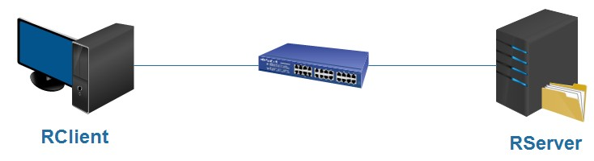
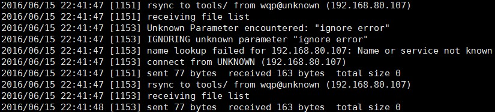
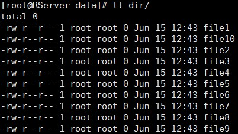

1、前言
rsync （remote sync）是一款非常好的数据同步工具，能够通过对比同步双方的数据变动，实现增量同步，还可以通过LAN/WAN实现远程多台主机间文件的同步，还能结合crond任务计划来执行自动备份，又可以结合ssh实现远程数据备份的安全，种种特性使他看起来相当优秀。但如果需备份数据十分庞大时，它的不足之处就显现出来了，比如每次执行同步操作时，rsync都会扫描全部数据进而计算出增量部分，而后再同步增量数据，这将会十分耗时，使其变得低效；并且受限于crond计划任务最小时间间隔为一分钟，会导致同步源端和目的段数据不一致，这在高可用环境中是不被允许的。这个时候我们就可以构建rsync+Inotify架构来解决此应用瓶颈。
备注：关于rsync的使用请查阅http://windchasereric.blog.51cto.com/5419433/1711313
2、inotify介绍
Inotify 是一个Linux特性，是一种强大的、细粒度的、异步的文件系统监控机制，linux内核从2.6.13起便加入了Inotify支持，通过Inotify可以监控文件系统中添加、修改、移动等各种细微事件，利用这个内核接口，第三方软件就可以监控文件系统下文件的各种变化情况，而Inotify-tools就是这样的一个第三方软件。Inotify反应灵敏，用法简单，并且比使用Crontab轮询高效很多。
2.1、inotify常见监控事件
-
IN_ACCESS ：文件被访问
-
IN_MODIFY ： 文件被修改
-
IN_ATTRIB ： 文件属性被修改
-
IN_CLOSE_WRITE ： 以可写方式打开的文件被关闭
-
IN_CLOSE_NOWRITE ： 以不可写方式打开的文件被关闭
-
IN_OPEN ： 文件被打开
-
IN_MOVED_FROM ： 文件被移出监控的目录
-
IN_MOVED_TO ： 文件被移入监控着的目录
-
IN_CREATE ： 在监控的目录中新建文件或子目录
-
IN_DELETE ： 文件或目录被删除
-
IN_DELETE_SELF ： 自删除，即一个可执行文件在执行时删除自己
-
IN_MOVE_SELF ： 自移动，即一个可执行文件在执行时移动自己
2.2、inotify相关的内核参数
[root@RServer ~]# ll /proc/sys/fs/inotify/
-rw-r--r-- 1 root root 0 Jun 13 17:49 max_queued_events
-rw-r--r-- 1 root root 0 Jun 13 17:49 max_user_instances
-rw-r--r-- 1 root root 0 Jun 13 17:49 max_user_watches
/proc/sys/fs/inotify/max_queued_events
该参数值是调用inotify_init时分配给实例的event队列最大值，超出该值的event被丢弃，并触发IN_Q_OVERFLOW事件。默认值：16384
注意，该参数定义的是events队列长度，若文件庞大且变化频繁需调整该值以适应监控。proc/sys/fs/inotify/max_user_instances
该参数值定义了用户创建inotify实例的上限。默认值：128/proc/sys/fs/inotify/max_user_watches
该参数定义了每个inotify示例可监控的最大目录数，如果监控文件庞大需调大该值。默认值：8192
参数调整示例：
可使用重定向方式修改
echo 10000000 > /proc/sys/fs/inotify/max_user_watches
2.3、inotify-tools介绍
Inotify-tools工具安装后提供了两个命令
-
/usr/bin/inotifywait：监控文件系统变化
-
/usr/bin/inotifywatch：用来统计文件系统访问的次数
2.3.1、Inotifywait用法
inotifywait [-hcmrq] [-e <event> ] [-t <seconds> ] [--format <fmt> ] [--timefmt<fmt> ] <file> [ ... ]
-h,–help //输出帮助信息
@ //排除不需要监视的文件，可以是相对路径，也可以是绝对路径
–fromfile //从文件读取需要监视的文件或排除的文件，一个文件一行，排除的文件以@开头
-m,–monitor //接收到一个事情而不退出，无限期地执行。默认行为是接收到一个事情后立即退出
-d,–daemon //跟–monitor一样，除了是在后台运行，需要指定 –outfile把事情输出到一个文件。也意味着使用了–syslog
-o,–outfile //输出事情到一个文件而不是标准输出。
-s,–syslog //输出错误信息到系统日志
-r,–recursive //监视一个目录下的所有子目录。
-q,–quiet //指定一次，不会输出详细信息，指定二次，除了致命错误，不会输出任何信息。
–exclude //正则匹配需要排除的文件，大小写敏感。
–excludei //正则匹配需要排除的文件，忽略大小写。
-t，–timeout# //设置超时时间，如果为0，则无限期地执行下去。
-e,–event //指定监视的事件。
-c,–csv //输出csv格式。
–timefmt //指定时间格式，用于–format选项中的%T格式。
–format //指定输出格式。
%w 表示发生事件的目录
%f 表示发生事件的文件
%e 表示发生的事件
%Xe 事件以“X”分隔
%T 使用由–timefmt定义的时间格式
2.3.2、inotifywatch用法
inotifywatch [-hvzrqf] [-e <event> ] [-t <seconds> ] [-a <event> ] [-d <event> ] <file> [ … ]
-h，–help # 输出帮助信息
-v，–verbose # 输出详细信息
@ # 排除不需要监视的文件，可以是相对路径，也可以是绝对路径。
–fromfile # 从文件读取需要监视的文件或排除的文件，一个文件一行，排除的文件以@开头。
-z，–zero # 输出表格的行和列，即使元素为空
–exclude # 正则匹配需要排除的文件，大小写敏感。
–excludei # 正则匹配需要排除的文件，忽略大小写。
-r，–recursive # 监视一个目录下的所有子目录。
-t，–timeout # 设置超时时间
-e，–event # 只监听指定的事件。
-a，–ascending # 以指定事件升序排列。
-d，–descending# 以指定事件降序排列
3、rsync + in otify 实时同步备份实验
3.1、实验拓扑

3.2、服务器端
1、安装超级守护进程
[root@RServer data]# yum -y install xinetd
注意：要想启动rsync服务，必须先安装此进程。rsync服务是依赖xinetd来启动
2、设置开机自动启动
[root@RServer data]# chkconfig xinetd on
3、安装rsync
[root@RServer data]# yum -y install rsync
4、查看超级守护进程下自动生成的rsync服务，并设置激活
[root@RServer data]# vim /etc/xinetd.d/rsync
service rsync
{
disable = no # 改为no ，表示启用rsync，默认是关闭的
flags = IPv6
socket_type = stream
wait = no
user = root
server = /usr/bin/rsync
server_args = --daemon
log_on_failure += USERID
5、创建共享的目录文件
[root@RServer /]# mkdir /data/
6、编辑配置文件/etc/rsyncd.conf
[root@RServer data]# vim /etc/rsyncd.conf
# Global Setting
uid = nobody #运行rsync服务器的角色名称
gid = nobody #运行rsync服务器的组名称
use chroot = no # 是否允许使用chroot
max connections = 10 #最大的连接数
strict modes = yes # 是否启用严格检查权限，用户是否允许上传下载
pid file = /var/run/rsync.pid # pid文件路径
log file = /var/log/rsyncd.log #日志文件记录路径
# Directory to be synced
[tools] #共享存储的模块名称
path = /data #共享文件存储路径
ignore error = yes #传输过程出现错误处理方式，yes表示忽略
read only = no #是否只读
write only = no #是否只写，表示不允许别人看
hosts allow = 192.168.80.0/24 #允许哪些主机来实现数据同步（类似白名单）
hosts deny = * # 如果匹配到上面的就表示通过，否则就拒绝
list = false #是否允许你列出所有 {true | false}
uid = root #以什么身份运行，如果这里不填，将会继承上面
gid = root
auth users = wqp #认证用户
secrets file = /etc/rsyncd.passwd #认证用户密码的文件
# rsyncd.passwd格式为 USERNAME:PASSWORD
注意：（此文件需要手动创建，系统不会自动生成，请注意，文件名必须是rsyncd.conf，否则rsync会无法正常读取配置文件）
7、编辑密码文件
[root@RServer /]# vim /etc/rsyncd.passwd
wqp:redhat
8、启动服务
[root@RServer /]# service xinetd start
9、查看所监听的端口
[root@RServer /]# netstat -tanlp | grep xinetd
tcp 0 0 :::873 :::* LISTEN 1362/xinetd
10、使用客户端测试连接rsync服务器
[root@RClient ~]# rsync /etc/fstab wqp@192.168.80.106::tools
3.3、客户端配置
1、安装inotify-tools
[root@RClient ~]# yum -y install inotify-tools
备注：如果使用yum安装，需要配置好epel源
2、编辑密码文件，目的是为后面脚本自动化执行
[root@RClient ~]# vim /etc/rsyncd.passwd
redhat
3、设置密码文件权限
[root@RClient ~]# chmod 600 /etc/rsyncd.passwd
# 设置密码文件夹权限为600，目的是为了更安全，而且如果不设置，有可能导致脚本读取密码文件出错
4、创建监控脚本
[root@RClient ~]# vim rsyncInotify.sh
#!/bin/bash
#
host='192.168.80.106'
user='wqp'
src='/tmp/dir'
dest='tools'
passwdFile='/etc/rsyncd.passwd'
inotifywait -mrq -e modify,attrib,moved_to,moved_from,move,move_self,create,delete,delete_self --timefmt='%d/%m/%y %H:%M' --format='%T %w%f %e' $src | while read chgeFile
dorsync -avqz --delete --progress --password-file=$passwdFile $src $user@$host::$dest &>>/var/log/rsync.log
done
5、设置开机自动启动
[root@RClient ~]# echo 'bash /root/rsyncInotify.sh &' >> /etc/rc.local
3.4、 验证试验结果
1、手动启动脚本
[root@RClient ~]# bash /root/rsyncInotify.sh &
2、在客户端上被监控的目录下创建文件
[root@RClient dir]# touch file{1..10}
3、查看服务器端rsyncd.log日志文件
[root@RServer data]# tail /var/log/rsyncd.log

4、查看已同步的文件
